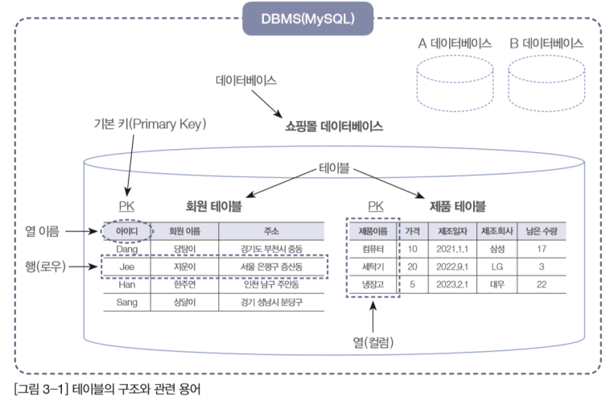

7.22
-
React TodoList+Join
asdasd
-
UI 구성하기
useReducer
-
useReducer는 usestate보다 더 다양한 컴포넌트 상황에 따라 다양한 상태를 다른 값으로 업데이트해주고 싶을 때 사용하는 Hook입니다.
12345678function reducer(state, action) {return{.....} //불변성을 지키면서 업데이트한 새로운 상태를 반환합니다.}//액션 값은 주로 다음과 같은 형태로 이루어져 있습니다.type: 'INCREMENT'//다른 값이 필요하다면 추가로 들어감cs -
철수가 은행에서 만원 출금을 해요
은행이 만원을 줘요
거래내역에 만원이 거래된 기록을 기록해요
거래내역이라는 state를 변경하기위해서는 은행이라는 Reducer에게 '만원을 출금해주세요' 이라는 action을 요구라는 dispatch에 담아서 은행이라는 reducer에 보내주게 됩니다.
즉 다시말하면 dispatch(요구) action(요구내용) Reducer(요구를 받아서 실행하는것) state(실행을 당해서 변화되는것)
8.01
데이터의 무결성
- 데이터베이스 안의 데이터는 오류가 없어야함
- 제약조건(Constrain)이라는 특성을 가짐
-
개체 무결성(기본키)
- 중복된 값이 없는 유일한 값을 갖는 데이터
- 모든 데이터값을 식별해야한다.
- 반드시 값을 가져야한다. null이면 안된다.
- 참조무결성(참조키, 외래키)
- 데이터베이스 크기 변경하거나 데이터 파일의 저장소 변경시 기존에 작성된 응용프로그램은 전혀 영향을 받지 않아야함
- 데이터베이스 안의 데이터에 데이터를 소유한 사람이나 데이터에 접근이 허가된 사람만 접근할 수 있어야
- 설계된 제약조건을 유지할 수 있는 데이터만 저장,보관해서 무결성을 유지해야한다.
- 다른테이블의 기본키로 설정된 데이터를 외래키로 만들어서 다른테이블에서 기본키로 사용되는 참조키를 기본키로 사용하는 테이블에 데이터가 있을 때만 사용가능하다
- 기본 테이블에서 다른테이블의 기본키로 사용되는 키를 참조키,외래키라고 한다.
- 기본 테이블에서의 참조키와 다른테이블의 기본키의 값을 동일 해야만 에러가 발생하지 않는다.
- 참조키로 다른 테이블에서 데이터를 찾기 위해서 이니까 몰라 이게뭐임 부서번호를 기본키로하는 테이블에 존재하지않는 참조키를 갖는 테이블에서는 절대로 사용할 수 없다.
데이터의 독립성
보안
- 접근할 때도 사용자의 계정에 따라서 다른 권한 가짐
section 01 DBMS 개요
- 동일한 데이터가 여러개 중복되어 저장되는 것 방지
- 통일된 방식으로 응용프로그램 작성이 가능
- 유지보수 또한 쉬워짐
- 대부분의 DBMS가 제공하는 백업,복원 기능 이용
- 데이터가 깨지는문제가 발생할 경우 원승으로 복원,복구하는 방법이 명확해짐
DB/DBMS
데이터 중복의 최소화
응용 프로그램 제작 및 수정이 쉬워짐
데이터의 안정성 향상
- 컴퓨터 파일에 기록 저장- 메모장, 엑셀 활용
- 컴퓨터에 저장된 파일의 내용은 읽고 쓰기가 편한 약속된 형태의 구조 사용
- 데이터의 양이 많아지면 데이터중복으로 인한 불일치 위험
데이버베이스의 발전
파일시스템사용
SQL
- SQL:구조적 질의어 - 관계형 데이터 베이스에서 데이터를 다루기 위해 사용하는 언어
- DDl(Data Definition Language) - 테이블을 생성,변경,삭제하기 위해 사용하는 언어
- DML(Data Manipulation Language) - 생성된 테이블에 데이터를 추가,수정,삭제,검색 하기위해 사용하는 언어
- DCL(Data Control Language) - 데이터를 제어하기위해 사용하는 언어(보안,권한)
- 1969 E.FCodd라는 학자가 수학모델에 근거해 고안
- 데이터베이스는 테이블(Table)이라 불리는 최소 단위로 구성
- 이 테이블은 하나 이상의 열로 구성
DBMS 분류
- 관계형 DBMS(Relational DBMS)
- 개체 (Entity):테이블 구조
- 열 = 컬럼(column) / 필드의 세로줄의 집합
- 행 = 로우(row) = 레코드(record) = 튜플(tuple)/ 필드(field,각각의 요소 한 개)의 가로줄
- 도메인(domain)하나


- 다른 DBMS에 비해 업무가 변화될 경우 쉽게 변화에 순응
- 유지보수 측면에서도 편리
- 대용량 데이터의 관리와 데이터 무결성integration보장
- 시스템 자원을 많이 차지해 시스템이 전반적으로 느려지는 것
- 하드웨어 발전되어 해결
관계형 DBMS(Relational DBMS)의 장단점
- 장점
- 단점
- 관계형 데이터베이스에서 사용되는 언어, '에스큐엘' 또는 '시퀄'
- DBMS 제작 회사와 독립적
- 다른 시스템으로 이식성이 좋음
- 표준이 계속 발전중
- 대화식 언어
- 분산형 클라이언트/서버 구조
SQL개요
- SQL(Structured Query Language)

데이터베이스 접속
- mysql -u root -p (엔터)
- 패스워드 입력
- show databases;(엔터) :데이터베이스 목록
- use employees;(엔터) :employees데이터베이스 선택
- show tables;(엔터) (선택된 데이터베이스의 테이블 목록)
- 구현하고자 하는 프로젝트의 가장 첫 번째 단계
- 시스템 분석 또는 요구사항 분석이라고 불림
- 요구사항 분석은 현재 우리가 '무엇을(what)'할 것인지 결정
- 사용자의 인터뷰와 업무 조사등을 수행
- 프로젝트의 첫 단추를 끼우는 중요한 단계
- 분석의 결과로 많은 문서 작성
- 시스템 설계 또는 프로그램 설계
- 구축하고자 하는 시스템을 어떻게(How) 할 것인지 결정
- 대부분의 프로젝트에서 분석과 설계의 과정이 전체 공정의 50% 이상 차지
- 현실세계에서 사용되는 데이터를 MySQL에 어떻게 올겸 놓을 것인지를 결정하는 과정
- 저장할 정보는 테이블(Table)이라는 형식에 맞춰 저장
- Ex) 쇼핑몰 데이터 베이스의 예 
CHAPTER3
SECTION 01 요구사항 분석과 시스템 설계 그리고 모델링
정보시스템 구축 절차 요약
분석,설계,구현,시험,유지보수의 5가지 단계
분석
설계
데이터베이스 모델링과 필수 용어
데이터베이스 모델링
- 하나하나의 단펵적인 정보
- 정보는 있으나 아직 체ㅖ화 되지 못한 상태
- 데이터를 입력하기 위해, 표 형태로 표현한 것
- Ex)회원정보 테이블, 제품 정보 테이블
- 테이블이 저장된느 저장소
- 각 데이터베이스는 서로 다른 고유한 이름을 가지고 있음
- 데이터베이스를 관리하는 시스템 또는 소프트웨어
데이터베이스 모델링과 필수 용어
데이터
테이블
데이터베이스(DB)
DBMS(Data Base Management System)
- 현실세게의 업무를 컴퓨터 시스템으로 옭겨놓는 일련의과정
- 대규모의 프로그램을 작성하기 위한 전체 과정
- -ex)집 짓기의 경우 경우 : 초가집 -> 목조건물 -> 수 십층 이상의 건물
- 분석과 설계 작업 등한시 -> '소프트웨어 개발 방법론' 대두
CHAPTER4 데이터 베이스 모델링
section 01 프로젝트 진행단계
프로젝트 (project)
- 가장 오래되고 전통적으로 사용되는 스포트웨어 개발 모델
- - 폭포가 떨어지듯이 각 단계가 끝나면 다음 단계로 진행
- 장점
- - 각 단계가 명확히 구분되어 프로젝트의 진행 단계가 명확해짐
- 단점
- - 문제점이 발생될 경우 다시 앞 단계로 거슬러 올라가기 어려움
폭포수 모델 (Waterfall model)
- -문제점이 대부분 프로그램 구현 단계나 테스트 단계에서 발생
- -대부분의 문제점을 업무 분석단계에서다시 시작하여 해결
- 현 세계에서 사용되는 작업이나 사물들을 DBMS의 데이터베이스 개체로 옭기기 위한 과정
SECTION 02 데이터 베이스 모델링
데이터베이스 모델링(데이터 모델링) 개념
- 개념적 모델링
- - 업무 분석 단게에 포함
- 논리적 모델링
- -업무 분석의 후반부와 시스템 설계의 전반부에 걸쳐 진행
- 물리적 모델링
-
-시스템 설계의 후반부에 주로 진행